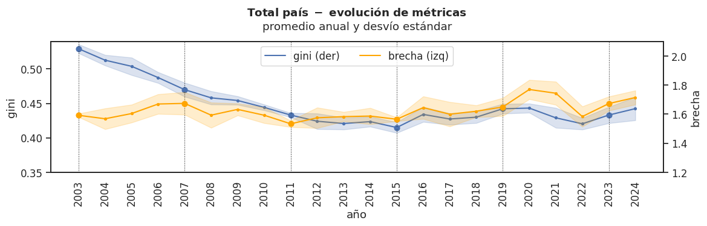
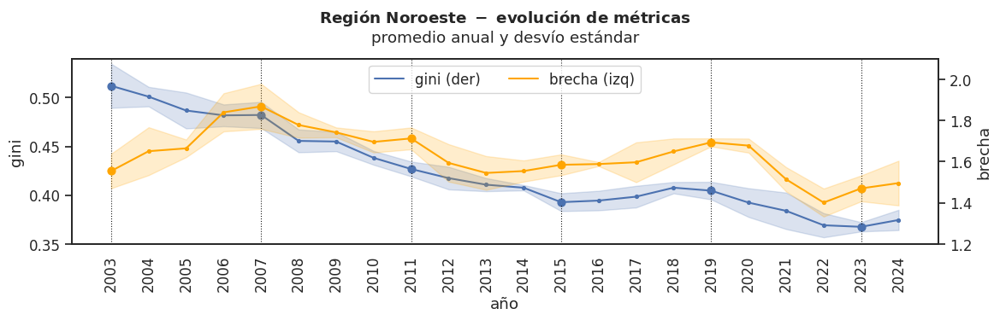
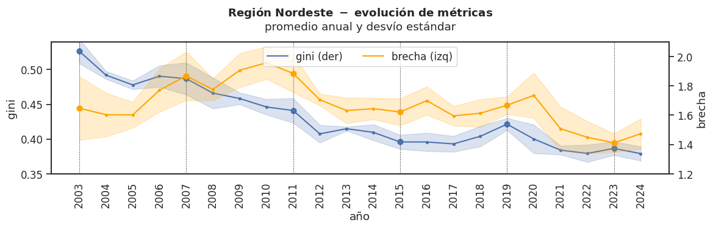
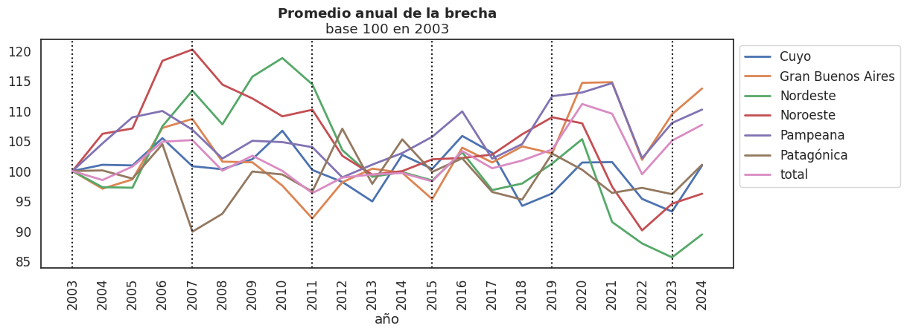
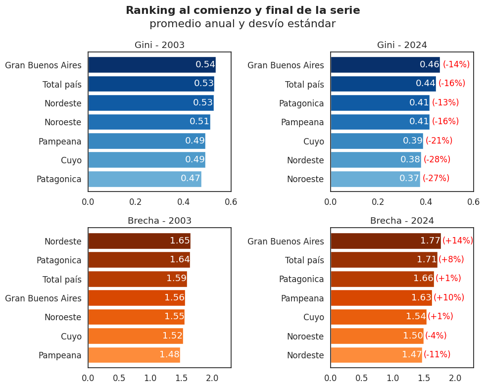

Desigualdad de ingresos en las distintas regiones argentinas
Evolución 2003-2024: un análisis comparativo a partir de la EPH
Trabajo final de la materia Análisis de Indicadores Sociales (cátedra Benza) de la Maestría en Sociología Económica (UNSAM).
La evolución de la desigualdad de ingresos en las distintas regiones argentinas (2003-2024): un análisis comparativo a partir de la EPH
Introducción
La desigualdad de ingresos constituye uno de los rasgos persistentes de las economías latinoamericanas y una tendencia creciente en la economía argentina en particular. La región es caracteriza por altos niveles de desigualdad en comparación con otras regiones del mundo y es incluso mayor a la que podría corresponderse por su nivel de de desarrollo (Gasparini, 2022). Como es sabido, la economía de nuestro país exhibe particularidades en cada una de sus distintas regiones y resulta relevante indagar cómo la desigualdad de ingresos se manifiesta y evoluciona a lo largo y a lo ancho de todo el territorio nacional. Las distintas provincias argentinas presentan fuertes heterogeneidades tanto en sus diferentes niveles de desigualdad como en su ritmo de cambio (González y Nazareno, 2019). Si bien la comparación interregional es necesaria, aquí se pondrá el foco en las dinámicas intraregionales a lo largo del siglo XXI.
El objetivo es describir la evolución de la desigualdad del ingreso per cápita familiar en cada región del país entre 2003 y 2024, prestando especial atención al resultado de los diferentes contextos socioeconómicos atravesados a través del tiempo. Se restringirá el análisis a los últimos seis gobiernos nacionales, empezando con la presidencia de Néstor Kirchner (2003) y finalizando con el primer año de la presidencia de Javier Milei (2024), últimos microdatos disponibilizados por el INDEC. Se utilizarán dos indicadores: el coeficiente de Gini y la brecha entre trabajadores formales e informales. De manera más específica, se abordará: i) la evolución, para cada región, de la desigualdad medida en dos indicadores; ii) la comparación entre las distintas regiones, para el primer y el último punto analizado.
El trabajo se estructura en tres secciones. En el primer apartado se podrán encontrar las fuentes de datos utilizadas, explicitando las variables seleccionadas y el recorte realizado. En el segundo apartado se presentarán los resultados del procesamiento, marcando tendencias y puntos de interés sobre la representación gráfica de los indicadores para cada una de las regiones. Para finalizar, el apartado de conclusiones repasa los hallazgos más relevantes y propone una lectura global de las tendencias observadas.
Metodología
La fuente de datos que se utilizó fue la Encuesta Permanente de Hogares (EPH) que elabora el Instituto Nacional de Estadísticas y Censos (INDEC). La EPH es un operativo que se realiza en las principales áreas urbanas del país, representando al 66% de la población total. Se procesaron las bases de microdatos de la EPH continua, disponible desde el tercer trimestre del año 2003 hasta el cuarto trimestre del año 2024, con la excepción del tercer trimestre de 20071, el tecer y cuarto trimestre de 2015 y el primer trimestre de 20162. Las bases de datos mencionadas fueron tratadas con el lenguaje de programación Python en la interfaz Google Colaboratory y descargadas con la librería PyEPH3.
Todos los cálculos están realizados en base al ingreso per cápita familiar (IPCF). Se utilizó preferentemente el factor de expansión PONDIH (para el tratamiento con corrección por no respuesta) para los años donde está disponible (2004-2006, 2016-2024). En el resto de los casos (2007-2015) se utilizó el factor de expansión PONDERA.
Se seleccionaron dos indicadores para aproximarnos la medición de la desigualdad en cada región argentina. Por un lado se trabajó con el coeficiente de Gini, ampliamente utilizado para medir qué tan desigualmente distribuidos están los ingresos de una población en un lugar y momento dado. Su valor oscila entre 0 (igualdad absoluta) y 1 (desigualdad absoluta). Para su aplicación en Python se utilizó la librería Inequalipy4. Además de permitir comparaciones con vastos estudios a nivel global por su uso extendido en ámbitos académicos (Gasparini, Cicowiez y Sosa Escudero, 2012), el coeficiente de Gini incorpora información de toda la distribución a diferencia del segundo indicador que se verá a continuación.
El segundo indicador seleccionado se basa en una categoría de empleo construída por el Programa Regional de Empleo para América Latina y el Caribe (PREALC) que divide a la población ocupada en tres grandes grupos: trabajadores públicos, trabajadores privados formales y trabajadores privados informales. El PREALC define al sector informal “como una manera de producir \[...\] que se define por el escaso capital con que cuentas las empresas, su tecnología rudimentaria en términos relativos y su desconexión de los circuitos financieros formales” (Klein y Tokman, 1988, p.206). Aquí se utilizará la brecha entre la mediana del IPCF de trabajadores formales (tanto público como privado) y trabajadores privados informales, pero es necesario tener en cuenta que el agrupamiento del sector privado formal con el sector público provoca un aumento de la brecha: para casi todos los años trabajados, el promedio del IPCF del sector público es mayor que el del sector privado formal. En términos de interpretación, si el valor del indicador es 1, indica que la mediana del IPCF de ambos grupos es igual. Valores superiores a 1 indican cuán superior es la mediana del IPCF de los trabajadores formales sobre los trabajadores privados informales; valores inferiores a 1 indicarían que la mediana de los trabajadores privados formales es mayor que la de los trabajadores formales. Por caso, un valor de 1.5 indica que la mediana del IPCF de los trabajadores formales es 50% mayor que la mediana de los trabajadores privados informales. Para el período analizado, el indicador toma siempre valores mayores a 1.
Análisis de resultados
Ahora bien, veamos la evolución de los indicadores para las distintas regiones. La EPH clasifica internamente a los aglomerados urbanos según la provincia a la que pertenecen en 6 regiones: Gran Buenos Aires (Ciudad de Buenos Aires y su área metropolitana), Pampeana (Resto de la Provincia de Buenos Aires, Entre Ríos, Santa Fe, Córdoba y La Pampa), Patagonia (Tierra del Fuego, Santa Cruz, Chubut, Río Negro y Neuquén), Cuyo (Mendoza, San Luis, San Juan), Noroeste (La Rioja, Catamarca, Santiago del Estero, Tucumán, Salta y Jujuy) y Noreste (Chaco, Formosa, Corrientes y Misiones). Tanto el coeficiente de Gini como la brecha fueron calculados a nivel trimestral (con las tres excepciones señaladas en el apartado Metodología) y promediadas anualmente. Sin dejar de considerar la serie completa, el análisis se enfocará en los años de cambio de gobiernos ejecutivos para facilitar el análisis.

A nivel nacional, se ve una reducción sostenida del coeficiente de Gini entre 2003 y 2015. Entre 2015 y 2019 tiene una tendencia ascendente; luego del 2019, aún con oscilaciones, finaliza en torno a 0.433, valores similares al 2011.
En el caso de la brecha, la tendencia es menos clara. Primero, se observa un fuerte aumento entre 2003 y 2007. Entre ese año y 2011 la brecha disminuye fuertemente, llegando a 1.533. Finalmente, aún con oscilaciones, la tendencia creciente en indiscutible: la brecha finaliza con un valor de 1.71.

El Gran de Buenos Aires tiene una tendencia muy similar al caso nacional, probablemente por representar en torno al 53% de la población relevada en el operativo. La reducción sostenida del coeficiente de Gini se observa hasta el año 2015. Luego aumenta hasta el año 2019 y, aún con oscilaciones, se sostiene en un valor cercano hasta el año 2023. La brecha tiene un aumento importante entre 2003-2007, una caída luego hasta 2011, oscilaciones hasta 2015 y otro aumento entre 2015-2023.

La región noroeste presenta, para el Gini, una reducción sostenida entre 2003 y 2023, con la excepción del periodo 2015-2019 dónde se estanca en torno al 0,393 y 0,405 respectivamente. Respecto a la brecha, aumenta fuertemente entre 2003 y 2007, levemente entre 2015 y 2019 y se reduce en el resto del periodo. En el último periodo analizado, la brecha pasa de 1,693 a 1,594.

La región nordeste comparte la tendencia de la región anterior. El coeficiente de Gini se reduce durante los años considerados con la excepción de la presidencia de Mauricio Macri, donde se estanca en torno al 0,4. La brecha entre trabajadores formales e informales presenta un gran aumento en los primeros cuatro años, se sostiene los siguientes cuatro y se reduce recién entre 2011 y 2015. Finalmente, el indicador se mantiene estable hasta 2019 y vuelve a presentar una reducción durante los últimos cuatro años analizados.

En la región se Cuyo se observa una reducción del índice de Gini hasta el año 2011. Luego, atraviesa cierra estabilidad y cierra el año 2019 con un leve aumento. Como en la mayoría de los casos, se reduce en los últimos cuatro años. Respecto a la brecha, sorprende con una mayor variabilidad que en el resto de las regiones. El indicador promedia en el año 2015 (1,530) con un valor similar al de 2003 (1,525). Luego se reduce en dos periodos siguientes, con mayor intensidad entre 2015 y 2019 y un poco más levemente hacia 2023.

La región pampeana presenta una reducción del coeficiente de Gini hasta el año 2015 (0,397). Los siguientes cuatro años aumenta a 0,418 y promedia el último año del período analizado con una reducción de 0,013 puntos. La brecha entre trabajadores formales e informales aumenta en los primeros cuatro años y luego, con oscilaciones, se mantiene estable hasta 2015. Durante 2015-2019 aumenta a 1,660 y cierra el período de análisis con una reducción de 0,066 puntos.

En la región patagónica el coeficiente de Gini se reduce sostenidamente hasta el año 2019. Luego se sostiene con oscilaciones hasta 2023 donde promedia un valor de 0,401. La brecha, si bien se reduce en los primeros cuatro años, presenta luego fuertes oscilaciones y termina aumentando al 1,689 en el año 2019. En los últimos cuatro años se reduce levemente hasta promediar en el 2023 con un valor de 1,659.

Para evaluar el desempeño de los indicadores quizás sea más claro verlo en un mismo gráfico con base 100 en el primer punto de la serie. Sobre el coeficiente de Gini podemos hacer tres apreciaciones. Primero, todas las regiones poseen una tendencia descendente similar, hasta el año 2015 donde empiezan a tener caminos divergentes. Segundo, el norte del país, tanto al este como al oeste, es la zona con mejor desempeño, bajando la desigualdad cerca de un 70% del valor que presentaban originalmente. Tercero, se distingue la tendencia de la región patagónica, por mantenerse relativamente alta entre 2007 y 2015 y terminar con el peor desempeño entre las 6 regiones con un descenso al 85% del valor que presentaba su coeficiente de Gini en 2003.

El balance es menos claro para la brecha. La heterogeneidad de los primeros 8 años de análisis es sugerente, con un fuerte aumento en el norte del país y un descenso en la región patagónica. Si bien entre los años 2011-2019 la brecha tiende a converger en torno a valores similares a los de 2003, para los últimos 5 años de análisis vuelve a destacar la heterogeneidad y se observa una reducción mayor de la brecha para la región nordeste, noroeste y cuyo.

Ahora bien, interesa detenerse en una comparación interregional, solo para el primer y el último punto de la serie. Es necesario decir que los indicadores producen rankings distintos. Para el año 2003, mientras el Gran Buenos Aires es la región que presenta un mayor coeficiente de Gini, ocupa el tercer puesto en el indicador de la brecha. La región patagónica es otro caso de interés: para el mismo año ocupa el último puesto si observamos el coeficiente de Gini y el segundo si observamos la brecha.
El otro punto de interés es el movimiento que presentan entre 2003 y 2023. La región patagónica escala posiciones si observamos el coeficiente de Gini, del último año segundo puesto. Por otro lado, observando la brecha, la región nordeste empieza la serie en el primer puesto y termina el 2023 en el último puesto.
Conclusiones
Vale la pena subrayar algunas ideas generales que se desprende del análisis anterior. Resulta evidente que los dos indicadores analizados, si bien están relacionados, tienen tendencias diferenciadas a lo largo del período elegido. La brecha entre trabajadores formales y trabajadores privados informales presenta mayores oscilaciones dentro de cada región y, a diferencia del coeficiente de Gini, no tiene una tendencia homogénea entre las distintas regiones. Existen períodos, como 2007-2011, donde la brecha aumenta mientras el Gini se reduce. Esto sugiere que cada indicador captura dimensiones distintas de la desigualdad y que pueden funcionar de manera complementaria.
Sin perjuicio de lo anterior, hay similitudes en los movimientos entre ambos indicadores que merecen ser observadas con detenimiento. Las regiones nordeste y noroeste presentan una la mayor reducción de ambos indicadores en el año 2024 respecto al 2003, mientras que el Gran Buenos Aires y la región pampeana presentan la menor reducción. En otras palabras, cuatro de las seis regiones presentan resultados similares en ambos indicadores entre 2003 y 2024.
Luego, cabe preguntarse por el efecto de políticas nacionales en las distintas trayectorias regionales. El coeficiente de Gini tiene una tendencia marcada y homogénea en las seis zonas analizadas, tanto en su descenso generalizado como en el aumento simultáneo en la presidencia de Mauricio Macri y en el primer año de Javier Milei. Un segundo punto de interés es cómo sus trayectorias se dispersan luego del año 2015, con algunas regiones que continúan su descenso (nordeste, noroeste, cuyo), algunas que lo hacen de manera más moderada (pampeana, patagónica) y el caso del Gran Buenos Aires donde directamente aumenta el coeficiente de Gini.
Bibliografía
Gasparini, L., Cicowiez, M. y W. Sosa Escudero (2012), Pobreza y desigualdad en América Latina. Conceptos, herramientas y aplicaciones, Buenos Aires, Temas Grupo Editorial.
Gasparini, L. (2022), Desiguales, Ciudad Autónoma de Buenos Aires, Edhasa.
González, L, y M. Nazareno. (2019). “La desigual distribución de la desigualdad. Política subnacional y distribución del ingreso en las provincias argentinas, 2003-2011”. Revista SAAP, 13(1), 11-20. Recuperado en 29 de agosto de 2025, de https://www.scielo.org.ar/scielo.php?script=sci_arttext&pid=S1853-19702019000100011&lng=es&tlng=es.
Klein, E. y V. Tokman (1988), “Sector informal: una forma de utilizar el trabajo como consecuencia de una forma de producir y no a la inversa. A propósito del artículo de Portes y Benton”, Estudios Sociológicos, 6 (16), pp. 205-212.
Notas
La informacion correspondiente al tercer trimestre de 2007 no esta disponible ya que los aglomerados Mar del Plata-Batan, Bahia Blanca-Cerri y Gran La Plata no fueron relevados por causas de orden administrativo, mientras que los datos correspondientes al Aglomerado Gran Buenos Aires no fueron relevados por paro del personal de la EPH.↩︎
En el marco de la emergencia estadistica el INDEC no publico la base solicitada. Más informacion en: https://www.indec.gob.ar/ftp/cuadros/sociedad/anexo_informe_eph_23_08_16.pdf↩︎
Documentación disponible en https://pyeph.readthedocs.io/es/latest/↩︎
Documentación disponible en https://github.com/urutau-nz/inequalipy↩︎